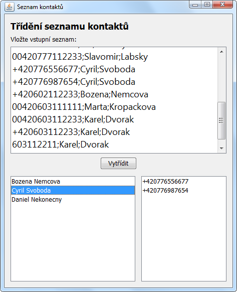
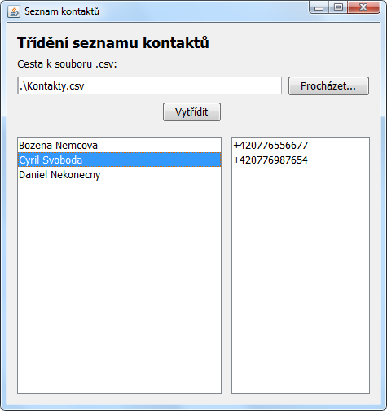

Úkol z lekce 09 - Map<String, Set<String>>
V hodině jsme naprogramovali konzolovou aplikaci, která dokáže vytřídit Seznam kontaktů. Úkolem je to stejné naprogramovat v podobě okenní aplikace.
Uživatelské rozhraní bude podobné jako v aplikaci TelefonniSeznam. Rozdíl je v tom, že v dolní části nebude jeden JList s telefony, ale dva JListy. V levém bude seznam osob a po kliknutí na jednu osobu se v pravém JListu zobrazí jeho/její telefony.
Jako bonus můžete načítat vstup ze souboru, namísto JTextArea nahoře. Bude fajn, když místo JTextArea vložíte na okno JTextField s cestou k souboru a tlačítko Procházet, které zobrazí JFileChooser. Jak na to nechám na googlení.
Domácí úkoly mi, prosím, pošlete klasicky na můj email zabalené pomocí 7-Zipu s heslem czechitas (se zapnutým šifrováním jmen souborů), aby Gmail akceptoval přílohu.